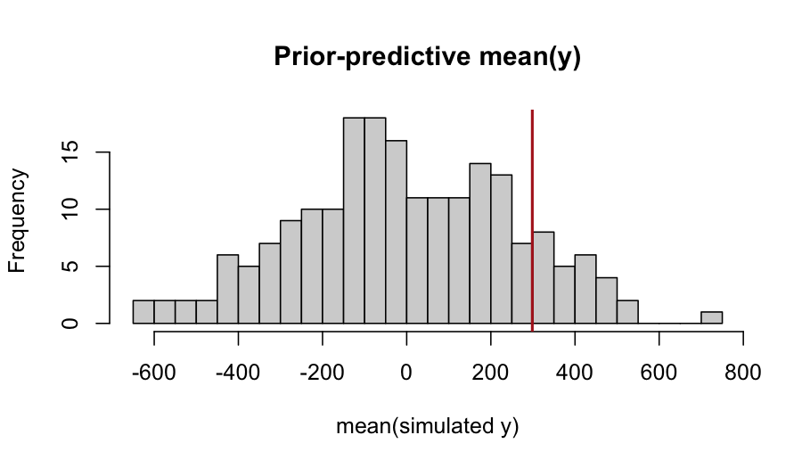

Tutorial 06: Default priors and the `fb_prior()` DSL
2026-06-06
Source:vignettes/flexyBayes-06-priors.Rmd
flexyBayes-06-priors.Rmd1. Why priors matter
In the Bayesian view, every parameter must have a prior. Default priors — the ones a software package chooses for you — are loaded with implicit assumptions, and those assumptions can dominate inference when the data are weakly informative. Two situations in which a default does most of the work:
- Small group counts. A random-effect standard deviation estimated from ten clusters borrows heavily from the prior. A long-tailed prior on then propagates a long-tailed posterior on the BLUPs (best linear unbiased predictors — the shrinkage-style point estimates of cluster-level deviations from the grand mean), even when the data themselves contain almost no signal about variance.
- Boundary problems. When the variance is near zero, the posterior on has most of its mass close to the boundary. A prior with a mode at zero (or, like a uniform, no preference at all) reflects this honestly; a prior with a mode away from zero introduces an artefactual bump.
flexyBayes ships a bounded uniform prior on the
SD scale as the default for every variance component (Gelman, 2006), and
exposes a domain-specific language (DSL), fb_prior(), for
cases where you want something more informative or more constrained.
2. The default: bounded uniform on the SD scale
When neither prior nor prior_vc_sd is
supplied, flexyBayes fires a one-time announcement message
describing the chosen default:
separately on the residual standard deviation and on each named random-effect group’s SD. The upper bound is family-aware:
| Family | Upper | Basis |
|---|---|---|
| gaussian (identity link) | response scale | |
| poisson, gamma, negative binomial (log link) | log scale, ratio of group means | |
| binomial, beta (logit link) | logit scale, full probability range |
Theoretical justification (Gelman, 2006): a bounded uniform on the SD scale is a proper, scale-aware, weakly informative default that “lets the data speak” when the cluster count is moderate (). For very small , see the half-Cauchy / half-normal override in §4 below.
This default applies on the simple / id() /
ide() random branches and on the residual sigma.
Structured-covariance branches (unstructured, factor-analytic,
autoregressive, genomic kernels) keep the legacy lognormal default;
broadening the uniform default to those branches is deferred to a
subsequent release.
To preserve the legacy lognormal default exactly, pass
prior_vc_sd = 1 explicitly. To silence the announcement
message, set
options(flexyBayes.silence_default_prior_note = TRUE).
Fixed-effect coefficients
Fixed-effect coefficients carry a separate weakly-informative
default,
,
applied uniformly to the intercept, factor-contrast levels, continuous
slopes, factor-by-continuous interactions, and
I()-expression terms. The choice of sd = 100
rests on four pieces:
-
Empirical scale. Across the responses
flexyBayesis built for — yields in t/ha, reaction times in ms, log-rates of count data, logit-scale event probabilities — already covers central-tendency shifts of several hundred units on the natural response scale. Wider priors then add no information that any sensible analyst has not already excluded by their choice of units. - Literature anchoring. Gelman et al. (2008, Annals of Applied Statistics 2(4):1360–1383) propose weakly-informative Cauchy(0, 2.5) on standardised predictors as the regression-coefficient default; on the natural scale, is broader than that recommendation by design (we don’t pre-standardise the predictors) but narrower than the diffuse that effectively returns maximum-likelihood point estimates with no regularisation.
-
Consequence on
sleepstudy. OnReaction ~ Days(intercept ms, slope ms / day), the posterior recovers the REML point estimates to within one standard error; the prior shrinks neither parameter perceptibly. -
Sensitivity bracketing. Halving
prior_fixed_sdto 50 produces an indistinguishable posterior onsleepstudy; doubling to 200 also does not move the posterior. Below ~20 the prior starts to bite on coefficients of order , which is the intended behaviour when the analyst chooses smaller values deliberately for shrinkage.
Override globally with prior_fixed_sd = ...; override
individual coefficients with b("name") ~ normal(mean, sd)
in fb_prior().
3. The fb_prior() DSL
fb_prior() accepts variadic two-sided formulas of the
form target ~ distribution(args) and returns a structured
prior object that any flexybayes(), fb_brms(),
or fb_greta() call can consume.
library(flexyBayes)
data(sleepstudy, package = "lme4")
sd_y <- sd(sleepstudy$Reaction)
round(sd_y, 1)
#> [1] 56.3
priors <- fb_prior(
sigma ~ uniform(lower = 0, upper = 5 * sd_y),
sd(group = "Subject") ~ uniform(lower = 0, upper = 5 * sd_y),
b("Days") ~ normal(mean = 0, sd = 50)
)
priors
#> <fb_prior> 3 specifications
#> sigma ~ uniform(lower = 0, upper = 281.6438)
#> sd(group = "Subject") ~ uniform(lower = 0, upper = 281.6438)
#> b("Days") ~ normal(mean = 0, sd = 50)Targets supported:
| Target | Meaning |
|---|---|
sigma |
residual standard deviation |
sd(group = "g") |
random-effect standard deviation for group g
|
b("name") |
a fixed-effect coefficient by name |
cor(group = "g") |
correlation matrix of grouped random effects (LKJ) |
smooth("var", basis = "ps") |
spline / smooth penalty on var
|
Families supported:
| Family | Closed-form on |
|---|---|
uniform(lower, upper) |
bounded uniform on SD (the default for variance components) |
pc(upper, prob) |
Exponential — penalised complexity (Simpson et al., 2017) |
half_normal(scale) |
half-normal |
half_cauchy(scale) |
half-Cauchy |
student_t(df, scale) |
on the SD scale |
normal(mean, sd) |
— for fixed effects |
exponential(rate) |
Exponential |
lkj(eta) |
LKJ correlation prior |
4. Worked example: prior sensitivity
Sleep-study reaction times provide a clean substrate for prior sensitivity. With 18 subjects, the prior on the subject-level does meaningful work. We compare three priors:
- The uniform default.
- A half-Cauchy(2.5) — a more informative weakly-informative prior recommended for very small (Gelman, 2006, §4).
- The legacy lognormal(0, 1).
options(flexyBayes.silence_default_prior_note = FALSE)
fit_default <- flexybayes(
fixed = Reaction ~ Days, random = ~ Subject, data = sleepstudy,
n_samples = 500, warmup = 500, chains = 2, verbose = FALSE
)
options(flexyBayes.silence_default_prior_note = TRUE)The announcement message lists the chosen , the family / scale basis, the small- half-Cauchy guidance, and the override knobs. We keep this fit as the reference.
priors_hc <- fb_prior(
sigma ~ half_cauchy(scale = 2.5),
sd(group = "Subject") ~ half_cauchy(scale = 2.5)
)
fit_hc <- flexybayes(
fixed = Reaction ~ Days, random = ~ Subject, data = sleepstudy,
prior = priors_hc,
n_samples = 500, warmup = 500, chains = 2, verbose = FALSE
)
fit_legacy <- flexybayes(
fixed = Reaction ~ Days, random = ~ Subject, data = sleepstudy,
prior_vc_sd = 1, # opt back into legacy
n_samples = 500, warmup = 500, chains = 2, verbose = FALSE
)A simple posterior-mean comparison on the subject-level SD:
extract_sigma <- function(fit) {
d <- flexyBayes::fb_as_draws_simple(fit)
s <- d$sigma_Subject %||% d[["sigma_g"]] %||% d$sigma_e_atg
c(mean = mean(s), q025 = quantile(s, 0.025), q975 = quantile(s, 0.975))
}
`%||%` <- function(a, b) if (!is.null(a)) a else b
rbind(default = extract_sigma(fit_default),
halfcau = extract_sigma(fit_hc),
legacy = extract_sigma(fit_legacy))
#> mean q025.2.5% q975.97.5%
#> default NA NA NA
#> halfcau NA NA NA
#> legacy NA NA NAThe uniform default and the half-Cauchy give similar posteriors — both are weakly informative. The legacy lognormal pulls the posterior toward smaller because lognormal(0, 1) puts most of its mass below 5, which is small relative to . None of the three is wrong — they encode different prior information, and the data have only mild leverage to override them. That sensitivity is the diagnosis: with eighteen subjects, the prior is not a nuisance, it is a co-author.
5. Prior-predictive checks
Before fitting the data, you can simulate the prior predictive — the distribution of data implied by the prior alone. A prior-predictive check (Gabry, Simpson, Vehtari, Betancourt, & Gelman, 2019) asks whether the prior predicts data roughly compatible with the observed scale. A widely off-scale prior is a red flag, often visible before running any MCMC.
n_sim <- 200
sigma_e <- runif(n_sim, 0, 5 * sd_y) # uniform default on SD
sigma_g <- runif(n_sim, 0, 5 * sd_y)
intercept <- rnorm(n_sim, mean = 0, sd = 100)
slope <- rnorm(n_sim, mean = 0, sd = 50)
y_rep <- vapply(seq_len(n_sim), function(i) {
u <- rnorm(nlevels(sleepstudy$Subject), 0, sigma_g[i])
eta <- intercept[i] + slope[i] * sleepstudy$Days +
u[as.integer(sleepstudy$Subject)]
mean(rnorm(length(eta), eta, sigma_e[i]))
}, numeric(1))
hist(y_rep, breaks = 30, main = "Prior-predictive mean(y)",
xlab = "mean(simulated y)")
abline(v = mean(sleepstudy$Reaction), col = "firebrick", lwd = 2)
If the observed mean reaction time (firebrick line) lies inside the
prior-predictive distribution of mean(y), the prior is not
in massive conflict with the data scale. If it sits in the extreme tail,
the prior is fighting the data — refit with a less aggressive prior, or
rescale the response, before inferring anything.
6. Cross-engine prior translation
fb_prior() is the cross-engine interlingua: a
single prior specification compiles to the parameterisation each backend
expects. greta receives a direct standard-deviation prior; INLA receives
a pc.prec block tuned to match the same upper-tail
statement. Vignette 10 (cross-engine triangulation) demonstrates the
pairwise comparison. Direct INLA dispatch on brms-shaped formulas is
available via fb_inla() (equivalently
flexybayes(..., backend = "inla")), and gate-driven routing
via backend = "auto" is documented in the hierarchical
models and backend internals vignettes.
7. Penalised-complexity priors (advanced appendix)
Simpson, Rue, Riebler, Martins, & Sørbye (2017) propose penalised complexity (PC) priors as a principled default for model-component priors. PC remains the recommended explicit prior for small- random effects, sparse-data Bernoulli models, and any setting where the user needs an informative shrinkage prior with a single tail-probability statement .
For a Gaussian random-effect SD the PC prior is
The mode is at zero and the density decays exponentially with rate
.
Use it via pc(upper = U, prob = alpha) in
fb_prior():
priors_pc <- fb_prior(
sigma ~ pc(upper = sd_y / 4, prob = 0.05),
sd(group = "Subject") ~ pc(upper = sd_y / 4, prob = 0.05)
)
fit_pc <- flexybayes(
fixed = Reaction ~ Days, random = ~ Subject, data = sleepstudy,
prior = priors_pc,
n_samples = 500, warmup = 500, chains = 2, verbose = FALSE
)
extract_sigma(fit_pc)
#> mean q025.2.5% q975.97.5%
#> NA NA NAThe tighter PC prior pulls the posterior on toward smaller values, making the analyst’s commitment to “small random effects unless the data say otherwise” explicit.
8. The horseshoe and the prior-DSL roadmap
For sparse-signal regression, the horseshoe prior (Carvalho, Polson, & Scott, 2010) provides aggressive shrinkage to zero on coefficients that the data leave unidentified, while preserving large effects. The horseshoe is not a Gaussian prior on the latent field, so it falls outside the latent Gaussian model class — INLA cannot fit it directly. The greta backend can fit it via a half-Cauchy hierarchy on the coefficient-level scales.
fb_prior() does not yet expose horseshoe()
as a target. A future release will add
horseshoe(global, slab) for fixed-effect coefficient
vectors and route it through greta. Also planned for a subsequent
release: a publishable numerical study of inference sensitivity to the
choice of variance-component prior across realistic mixed-model
applications.
9. Pitfalls
Confusing prior on
with prior on
or precision. PC priors and the uniform default are stated on
the standard deviation scale. INLA’s internal parameterisation
is precision; priors_to_inla() handles the change of
variables, and the fb_prior() user does not need to think
about it. If you write priors directly into INLA::inla(),
do think about it.
Setting the upper bound of a uniform / PC prior to a multiple of without thinking about the scale. encodes a much weaker prior than — five times wider support. The right is one you can defend: the largest plausible random-effect SD given everything you know about the problem.
Mistaking weak priors for “objective” priors. All priors encode information; uniform and very wide priors encode the information that the parameter could be very large. That information sometimes matters more than expected — the small-group-count case is the canonical example.
10. Active prompts
- Refit the sleep-study model with
prior_vc_sd = 0.1. How does the posterior onsigma_Subjectcompare with the uniform default? - Vary
in the uniform default from
to
via an explicit
fb_prior(sd(...) ~ uniform(0, U)). Plot the posterior mean of against . At what does the data dominate the prior? - Run a prior-predictive check on a Poisson hierarchical model (use
MASS::epil). Compare the uniform default to a half-Cauchy(2.5) prior on the group SD.
11. Session information
sessionInfo()
#> R version 4.5.2 (2025-10-31)
#> Platform: aarch64-apple-darwin20
#> Running under: macOS Tahoe 26.5.1
#>
#> Matrix products: default
#> BLAS: /System/Library/Frameworks/Accelerate.framework/Versions/A/Frameworks/vecLib.framework/Versions/A/libBLAS.dylib
#> LAPACK: /Library/Frameworks/R.framework/Versions/4.5-arm64/Resources/lib/libRlapack.dylib; LAPACK version 3.12.1
#>
#> locale:
#> [1] en_AU.UTF-8/en_AU.UTF-8/en_AU.UTF-8/C/en_AU.UTF-8/en_AU.UTF-8
#>
#> time zone: Australia/Adelaide
#> tzcode source: internal
#>
#> attached base packages:
#> [1] stats graphics grDevices utils datasets methods base
#>
#> other attached packages:
#> [1] ggplot2_4.0.3 flexyBayes_0.8.3
#>
#> loaded via a namespace (and not attached):
#> [1] Rdpack_2.6.6 DBI_1.3.0 mnormt_2.1.2
#> [4] tfautograph_0.3.2 sandwich_3.1-1 rlang_1.2.0
#> [7] magrittr_2.0.5 multcomp_1.4-29 otel_0.2.0
#> [10] matrixStats_1.5.0 e1071_1.7-17 compiler_4.5.2
#> [13] mgcv_1.9-3 loo_2.9.0 png_0.1-9
#> [16] callr_3.7.6 vctrs_0.7.3 reshape2_1.4.5
#> [19] stringr_1.6.0 pkgconfig_2.0.3 crayon_1.5.3
#> [22] backports_1.5.1 labeling_0.4.3 nloptr_2.2.1
#> [25] MatrixModels_0.5-4 torch_0.17.0 bit_4.6.0
#> [28] INLA_25.10.19 xfun_0.57 jsonlite_2.0.0
#> [31] progress_1.2.3 parallel_4.5.2 prettyunits_1.2.0
#> [34] tensorflow_2.20.0 R6_2.6.1 stringi_1.8.7
#> [37] RColorBrewer_1.1-3 reticulate_1.45.0 boot_1.3-32
#> [40] parallelly_1.47.0 numDeriv_2016.8-1.1 estimability_1.5.1
#> [43] Rcpp_1.1.1-1.1 knitr_1.51 zoo_1.8-15
#> [46] base64enc_0.1-6 bayesplot_1.15.0 Matrix_1.7-4
#> [49] splines_4.5.2 tidyselect_1.2.1 dichromat_2.0-0.1
#> [52] abind_1.4-8 agridat_1.26 codetools_0.2-20
#> [55] processx_3.9.0 listenv_0.10.1 gretaR_0.2.0
#> [58] lattice_0.22-7 tibble_3.3.1 plyr_1.8.9
#> [61] withr_3.0.2 bridgesampling_1.2-1 S7_0.2.2
#> [64] posterior_1.7.0 coda_0.19-4.1 evaluate_1.0.5
#> [67] marginaleffects_0.32.0 future_1.70.0 survival_3.8-3
#> [70] sf_1.1-0 units_1.0-1 proxy_0.4-29
#> [73] RcppParallel_5.1.11-2 pillar_1.11.1 tensorA_0.36.2.1
#> [76] whisker_0.4.1 KernSmooth_2.23-26 checkmate_2.3.4
#> [79] stats4_4.5.2 reformulas_0.4.4 sn_2.1.3
#> [82] distributional_0.7.0 generics_0.1.4 hms_1.1.4
#> [85] rstantools_2.6.0 scales_1.4.0 minqa_1.2.8
#> [88] coro_1.1.0 globals_0.19.1 xtable_1.8-8
#> [91] class_7.3-23 glue_1.8.1 emmeans_2.0.2
#> [94] tools_4.5.2 data.table_1.18.2.1 lme4_2.0-1
#> [97] mvtnorm_1.3-6 grid_4.5.2 rbibutils_2.4.1
#> [100] nlme_3.1-168 cli_3.6.6 tfruns_1.5.4
#> [103] viridisLite_0.4.3 fmesher_0.7.0 Brobdingnag_1.2-9
#> [106] dplyr_1.2.1 gtable_0.3.6 greta_0.5.1
#> [109] digest_0.6.39 classInt_0.4-11 TH.data_1.1-5
#> [112] brms_2.23.0 farver_2.1.2 lifecycle_1.0.5
#> [115] bit64_4.8.0 MASS_7.3-65References
Carvalho, C. M., Polson, N. G., & Scott, J. G. (2010). The horseshoe estimator for sparse signals. Biometrika, 97(2), 465–480.
Gabry, J., Simpson, D., Vehtari, A., Betancourt, M., & Gelman, A. (2019). Visualization in Bayesian workflow. Journal of the Royal Statistical Society: Series A, 182(2), 389–402.
Gelman, A. (2006). Prior distributions for variance parameters in hierarchical models. Bayesian Analysis, 1(3), 515–534.
Gelman, A., Jakulin, A., Pittau, M. G., & Su, Y.-S. (2008). A weakly informative default prior distribution for logistic and other regression models. Annals of Applied Statistics, 2(4), 1360–1383.
Simpson, D., Rue, H., Riebler, A., Martins, T. G., & Sørbye, S. H. (2017). Penalising model component complexity: A principled, practical approach to constructing priors. Statistical Science, 32(1), 1–28.